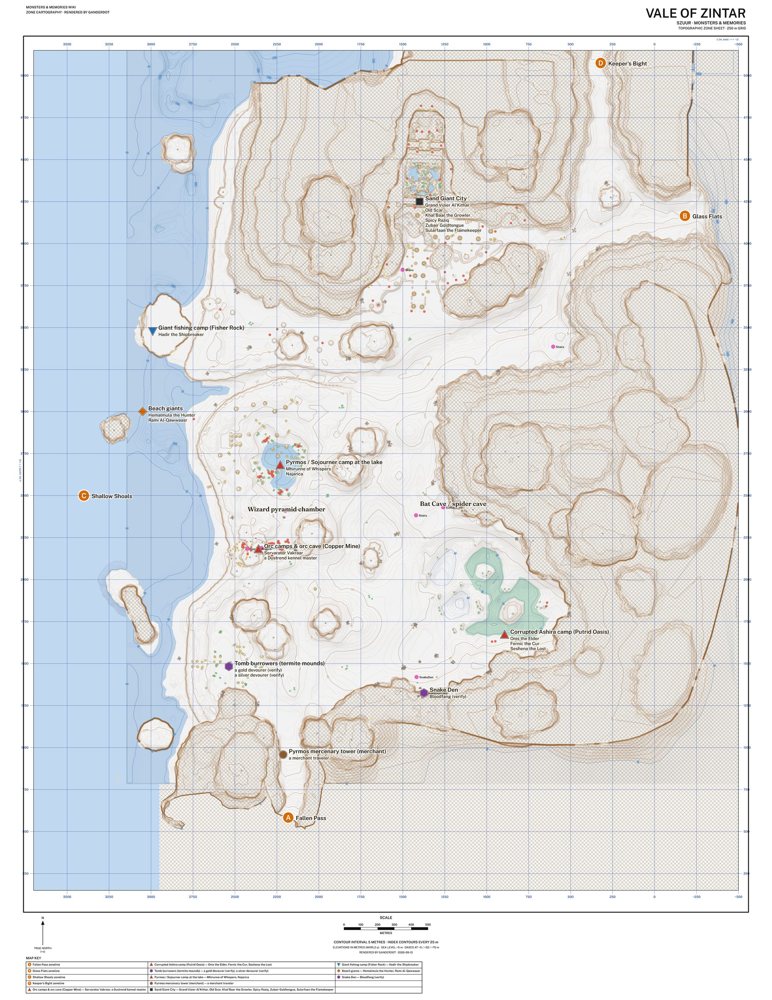
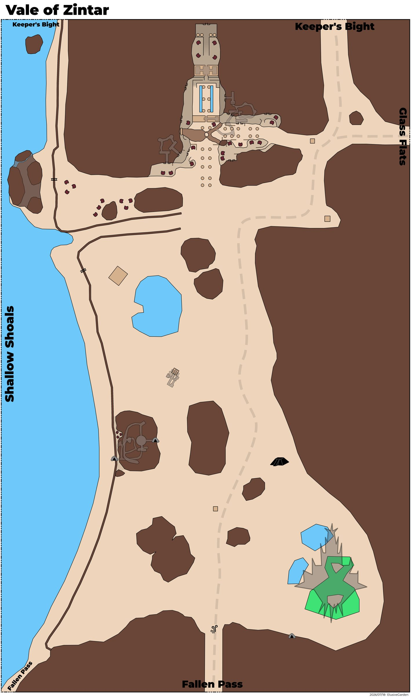
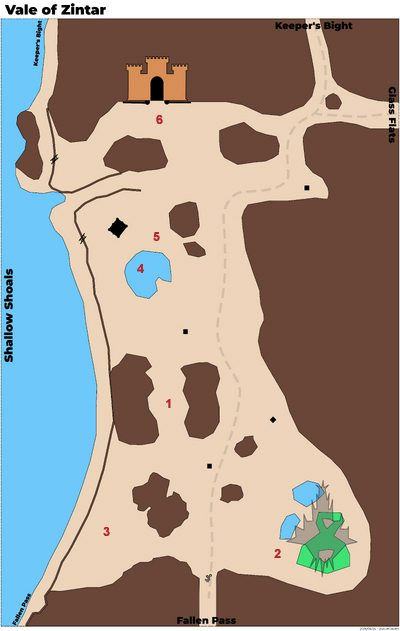
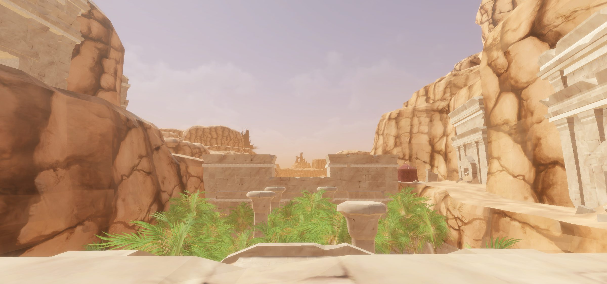

Vale of Zintar
Vale of Zintar is a coastal desert situated on the West coast of Aêthoril in the Szuur region. To the North is Keeper's Bight, to the East is Glass Flats, to the South is Fallen Watch, to the West is Shallow Shoals. Giants and Giant Undead Skeletons are the dominant force but orcs have also make their pressence known. However, corruption from unknown sources spreads in the South. There is a Wizard Pyramid located in the South half of the zone.
Map




1. Orc and Orc Cave Entrance (28-35) 2. Corrupted Ashira (22-28) 3. Tomb Burrowers (29-36) 4. Pyrmos Encampment around lake 5. Traveling Merchant (food vendor) 6. Giant City (50+)
Named mobs
| Named | Lvl | Race / class | Where | Known loot (hover) |
|---|---|---|---|---|
| Onis the Elder | 27 | Ashira | Corrupted Ashira Camp | Fang-Backed Boots, Sekhara Manacles, Moonrise Staff, Desert Nomad Treadwraps, Ceremonial Plated Mantle |
| Seshena the Lost | ~27+ | Ashira | Corrupted Ashira Camp | Knotted Cudgel, Embermoss Ring, Chain Dervish Mantle, Onyx Bat Figurine, Desert Nomad Belt, Sand-Blasted Boots |
| Fernic the Cur | 28 | Ashira | Corrupted Ashira Camp | Desert Nomad Bracer, Fernstalker's Sash, Ironwood Shortsword, Ripped Leather Mask, Fernstep Greaves |
| a gold devourer | ~35+ | Beetle | - | Dense Gold Carapace |
| a silver devourer | ~35+ | Beetle | - | Dense Silver Carapace |
| a Dustrend kennel master | 35 | Orc | Orc cave | Kennel Master's Faceguard |
| Hemalmula the Hunter | 40 | Giant / Archer | Beach | Duneshoulder Pauldrons, Duneseeker's Hood, Dune Giant's Pendant, Windstorm Moccasins |
| Rami Al-Qawwaasr | 45 | Giant / Archer | Beach | Vale Giant Shortbow, Duneshaper's Ring, Duneshaper's Sandals |
| Hadir the Shipbreaker | 46 | Giant / Fighter | Fisher Rock | Hadir's Iron Fist, Hadir's Blade, Shipbreaker Soft Wraps, Sandcoated Belt |
| Grand Vizier Al'Kithar | 55 | Giant / Wizard | Sand Giant City | Grand Vizier's Coif, Gaze of Empire, Ancient Zintari Seal |
| Old Scar | 60 | Wolf | Sand Giant City | Defiled Pauldrons, Stained Apostle's Cloak |
| Khal'Baar the Growler | 60 | Giant / Beastmaster | Sand Giant City | Carved Spirit Totem, Driftwood Crown, Paua Shell Earring |
| Spicy Raziq | 60 | Giant | Sand Giant City | Stirring Stick, Polished Sandstone, Scholar's Shoulderpads |
| Zubair Goldtongue | 60 | Giant | Sand Giant City | Embezzler's Golden Kilt, Wayfarer's Vambraces, Whalebone Spear |
| Sularfaan the Flamekeeper | 60 | Sand Giant City | Branded Platinum Wristguard, Hammer of Elemental Forging | |
| Bloodfang | - | Snake | - | Bloodfang Scale Shield, Eye of Serpents, Fang of the Serpent |
| Mhirunne of Whispers | - | Human | Sojourner Camp | |
| Najarica | - | Human / Beastmaster | Sojourner Camp | No Loot |
| Servarator Vakraar | - | Orc | Orc cave | The Final Word, Dustmaul Pauldrons, Vakraar's Dustveil Hoop, Dustmaul sash, Vestments of Vakraar |
Mobs & NPCs (camps by level)
Rows with a level are huntable camps; rows without are usually town NPCs or not yet documented.
| Name | Lvl | Race | Class | Where | Notes |
|---|---|---|---|---|---|
| a desert creeper | ~19-21 | Spider | - | - | |
| a young basilisk | ~19-20 | Basilisk | - | - | |
| a corrupted adept | ~26 | Ashira | Monk | Corrupted Ashira Camp | ashira Corrupted Leather , Ashira Hunter Tooth , Ashira War Tooth |
| a corrupted ashira | ~26 | Ashira | - | Corrupted Ashira Camp | ashira Corrupted Leather , Ashira Hunter Tooth , Ashira War Tooth |
| a corrupted outrider | ~26 | Ashira | - | Corrupted Ashira Camp | ashira Corrupted Leather , Ashira Hunter Tooth , Ashira War Tooth |
| a corrupted warrior | ~26 | Ashira | - | Corrupted Ashira Camp | ashira Corrupted Leather , Ashira Hunter Tooth , Ashira War Tooth |
| a Ba'Haara guard | 27 | Human | - | Oasis | |
| a Dustrend foot soldier | ~27-30 | Orc | - | - | |
| a Dustrend sacramir | ~27-30 | Orc | Cleric | - | |
| A dire wolf patroller | 29 | Wolf | - | Orc Cave | |
| a Dustrend legionary | ~29-30 | Orc | - | - | |
| a Dustrend patroller | ~29-32 | Orc | - | - | |
| a Dustrend priest | ~29-30 | Orc | - | - | |
| a Dustrend venator | ~29-30 | Orc | - | - | |
| a Dustrend cultor | ~31-32 | Orc | - | - | |
| a Dustrend deshpar | ~31-32 | Orc | - | - | |
| a Dustrend serverat | ~31-32 | Orc | - | - | |
| a giant tomb burrower | ~31-33 | Beetle | - | - | |
| a tomb burrower | ~31-33 | Beetle | - | - | |
| An elder tomb burrower | ~33-34 | Beetle | - | - | |
| an ancient tomb burrower | ~33-34 | Beetle | - | - | |
| a skeletal giant | 38+ | Skeleton | - | - | |
| a sand dervish | ~40 | - | - | - | |
| a dry bone skeletal giant | 42-46 | Skeleton | - | - | |
| a sand giant bandit | ~45 | Giant | - | Giant City, Fishing Camp | |
| a sand giant fisher | ~45 | Giant | - | Fishing Camp | |
| a sand giant raider | ~45 | Giant | - | Fishing Camp | |
| a giant wolf | ~54 | Wolf | - | Giant City | |
| a sand giant fakir | ~54-57 | Giant | - | Giant City | |
| a sand giant geomancer | ~54-57 | Giant | - | Giant City | |
| a sand giant suncaller | ~54-57 | Giant | - | Giant City | |
| a sand trapper | ~54 | Spider | - | Giant City | |
| a smouldering servant | ~54 | Elemental | - | Giant City | |
| a sand giant brigand | 57 - 59 | Giant | - | Giant City | |
| A dire wolf ravager | - | Wolf | - | Orc Cave | |
| a Pyrmos mercenary | - | - | - | Pyrmos mercenary Tower | |
| a Sojourner guard | - | Human | - | Oasis | |
| a Sojourner lookout | - | Human | - | Oasis | |
| a Sojourner venomwalker | - | Human | - | Oasis | |
| a Zintari asp | - | Snake | - | - | |
| a corrupted creeper | - | Spider | - | Corrupted Ashira Camp | |
| a dire wolf | - | Wolf | - | - | |
| a dust drake scout | - | Drake | - | - | |
| a malaise elemental | - | Elemental | - | - | |
| a merchant traveler | - | - | Beastmaster | Pyrmos mercenary Tower | Merchant |
| a purified water elemental | - | Elemental | - | Oasis | |
| a spice merchant | - | Human | - | Oasis | Merchant |
| an ashira hierophant | - | Ashira | - | - | |
| an ashira huntmaster | - | Ashira | - | - | |
| an ashira naturewalker | - | Ashira | - | - | |
| an infected wolf | - | Wolf | - | - |
Quests
| Quest | Reward | Giver | Min lvl |
|---|---|---|---|
| Example Quest Name | Example Reward | Example Quest Giver | - |
| Example Quest Name | Example Reward | Example Quest Giver | - |
Gear that drops here
| Slot | Item | Key stats (wiki) | How to get | Lvl | Classes |
|---|---|---|---|---|---|
| Bone Chips | no stats listed on wiki | Quest: Bone Chips for Moon Dances (Moon Dances, Faelindral, min lvl 1) Quest: Bone Chips for Squire Ryland (Squire Ryland, Night Harbor, min lvl 1) Quest: Druid Starter Quest (Faelindral) (Sylvarya Starveil, Faelindral, min lvl 1) Quest: Find Delilah's Pet (Delilah, Underdocks, min lvl 1) | 1 | NEC SHD | |
| Primary, Secondary | Torch | Effect: Torch (Passive. Must Equip. Level: 1) | Quest: Pests at the Farm (Farmer Ammar, Night Harbor, min lvl 1) Vendor: A goods merchant — Night Harbor, Shallow Shoals; A greedy halfling — Night Harbor; A shifty elf — Evershade Weald Crafted: Survival (trivial X) Drop: A rotting skeleton (lvl 1) — Night Harbor, Noob Yard | 1 | All classes |
| Primary, Secondary | Corroded Bronze Axe | DMG 9 / DLY 42 | Drop: a bulky bandit (lvl 26) — Scarwood, - Drop: a risen commander (lvl -) — Shaded Dunes, Ancient Crypt Entrance Drop: an ashira warrior (lvl 6-7) — Sungreet Strand, - Drop: an ashira preserver (lvl -) — Sungreet Strand, - | 6 | BST FTR INQ PAL RNG SHD SPB |
| Primary | Corroded Bronze Battle Axe | DMG 14 / DLY 54 | Drop: an ashira huntmaster (lvl 16-18) — Tel Ekir, - Drop: an ashira ain guard (lvl -) — Tel Ekir, - Drop: a Bloodynose spooker (lvl ~13-14) — Tel Ekir, - Drop: a skeletal acolyte (lvl 17) — Ancient Crypt, - | 6 | BST FTR INQ PAL SHD |
| Feet | Corroded Bronze Chain Boots | AC 5 | Drop: an ashira mystic (lvl -) — Tel Ekir, - Drop: a Bloodynose sergeant (lvl 15) — Tel Ekir, - Drop: a Bloodchain guard (lvl unconfirmed) — Blacktide Bay Drop: a skeletal guard (lvl ~12-15) — Ancient Crypt, - | 6 | BRD CLR FTR INQ PAL RNG ROG SHD SHM |
| Hands | Corroded Bronze Chain Gloves | AC 7 | Drop: an ashira ain guard (lvl -) — Tel Ekir, - Drop: a fallen sentinel (lvl 19) — Ancient Crypt, - Drop: an ashira warrior (lvl 6-7) — Sungreet Strand, - Drop: an ashira luminary (lvl unconfirmed) — Sungreet Strand | 6 | BRD CLR FTR INQ PAL RNG ROG SHD SHM |
| Neck | Corroded Bronze Chain Gorget | AC 2 | Drop: an ashira huntmaster (lvl 16-18) — Tel Ekir, - Drop: an ashira mystic (lvl -) — Tel Ekir, - Drop: a Bloodynose schemer (lvl unconfirmed) — Tel Ekir Drop: an ashira warrior (lvl 6-7) — Sungreet Strand, - | 6 | BRD CLR FTR INQ PAL RNG ROG SHD SHM |
| Legs | Corroded Bronze Chain Leggings | AC 8 | Drop: an ashira ain guard (lvl -) — Tel Ekir, - Drop: a Bloodynose captain (lvl 16) — Tel Ekir, - Drop: a Bloodynose schemer (lvl unconfirmed) — Tel Ekir Drop: a trail bandit (lvl 26) — Scarwood, - | 6 | BRD CLR FTR INQ PAL RNG ROG SHD SHM |
| Shoulders | Corroded Bronze Chain Shoulderguards | AC 8 | Drop: a Sangrel striker (lvl 18-22) — Keeper's Bight, - Drop: a poacher pathfinder (lvl 28-30) — Keeper's Bight, Poacher Camp, Bear Cave Drop: a Sangrel hunter (lvl 18-22) — Keeper's Bight, - Drop: a Blacktide brute (lvl 25) — Keeper's Bight, - | 6 | BRD CLR FTR INQ PAL RNG ROG SHD SHM |
| Chest | Corroded Bronze Chain Tunic | AC 9 | Drop: an ashira ain guard (lvl -) — Tel Ekir, - Drop: a Bloodynose witch doctor (lvl 15) — Tel Ekir, - Drop: a skeletal soldier (lvl 17) — Ancient Crypt, - Drop: a dusty skeleton (lvl -) — Fallen Pass, - | 6 | BRD CLR FTR INQ PAL RNG ROG SHD SHM |
| Primary, Secondary | Corroded Bronze Dagger | DMG 5 / DLY 24 | Drop: an ashira ain guard (lvl -) — Tel Ekir, - Drop: an ashira naturalist (lvl -) — Tel Ekir, - Drop: a skeletal acolyte (lvl 17) — Ancient Crypt, - Drop: a skeletal soldier (lvl 17) — Ancient Crypt, - | 6 | ARC BRD BST ELE ENC FTR NEC RNG ROG SHD SHM SPB WIZ |
| Primary | Corroded Bronze Great Scythe | DMG 12 / DLY 46 | Drop: a skeletal soldier (lvl 17) — Ancient Crypt, - Drop: a skeletal acolyte (lvl 17) — Ancient Crypt, - Drop: a ghastly cook (lvl 16) — Ancient Crypt, - Drop: a cultist (lvl -) — Shaded Dunes, Ancient Crypt Entrance | 6 | BST DRU FTR INQ NEC RNG SHD SPB |
| Secondary | Corroded Bronze Kite Shield | AC 8 | Drop: a Sangrel striker (lvl 18-22) — Keeper's Bight, - Drop: a mercenary magus (lvl unconfirmed) — Keeper's Bight Drop: a poacher pathfinder (lvl 28-30) — Keeper's Bight, Poacher Camp, Bear Cave Drop: a Bloodynose frightener (lvl ~15-18) — Tel Ekir, - | 6 | BRD FTR INQ PAL RNG SHD |
| Primary | Corroded Bronze Long Spear | DMG 12 / DLY 48 | Drop: an ashira alpha (lvl ~14) — Tel Ekir, - Drop: a Bloodynose frightener (lvl ~15-18) — Tel Ekir, - Drop: a Bloodynose witch doctor (lvl 15) — Tel Ekir, - Drop: a restless skeleton (lvl 18-21) — Fallen Pass, - | 6 | ARC BRD BST FTR INQ RNG ROG SHD SHM |
| Feet | Corroded Bronze Plate Boots | AC 6 | Drop: an ashira ain guard (lvl -) — Tel Ekir, - Drop: a fallen sentinel (lvl 19) — Ancient Crypt, - Drop: a skeletal soldier (lvl 17) — Ancient Crypt, - Drop: a fallen sergeant (lvl ~18-20) — Ancient Crypt, - | 6 | CLR FTR INQ PAL SHD |
| Hands | Corroded Bronze Plate Gauntlets | AC 8 | Drop: an ashira ain guard (lvl -) — Tel Ekir, - Drop: a stumbling skeleton (lvl 14) — Night Harbor, Crypt (Night) Drop: a river pirate (lvl unconfirmed) — Night Harbor Drop: a mercenary (lvl unconfirmed) — Night Harbor | 6 | CLR FTR INQ PAL SHD |
| Waist | Corroded Bronze Plate Girdle | AC 4 | Drop: a Muggrah brawler (lvl 20+) — Sungreet Strand, Muggrah Mountain Camp Drop: an ashira warrior (lvl 6-7) — Sungreet Strand, - Drop: a henchman (lvl unconfirmed) — Sungreet Strand Drop: a Muggrah scrapper (lvl 17+) — Sungreet Strand, Muggrah Mountain Camp | 6 | CLR FTR INQ PAL SHD |
| Head | Corroded Bronze Plate Helm | AC 9 | Drop: a bulky bandit (lvl 26) — Scarwood, - Drop: a ghastly cook (lvl 16) — Ancient Crypt, - Drop: a restless skeleton (lvl 18-21) — Fallen Pass, - Drop: a dusty skeleton (lvl -) — Fallen Pass, - | 6 | CLR FTR INQ PAL SHD |
| Face | Corroded Bronze Plate Visor | AC 4 | Drop: a skeletal soldier (lvl 17) — Ancient Crypt, - Drop: a skeletal guard (lvl ~12-15) — Ancient Crypt, - Drop: an ashira elite guard (lvl ~27) — Tel Ekir, - Drop: a Muggrah scrapper (lvl 17+) — Sungreet Strand, Muggrah Mountain Camp | 6 | CLR FTR INQ PAL SHD |
| Primary, Secondary | Corroded Bronze Scimitar | DMG 7 / DLY 36 | Drop: an ashira ain guard (lvl -) — Tel Ekir, - Drop: an ashira naturalist (lvl -) — Tel Ekir, - Drop: a Bloodynose witch doctor (lvl 15) — Tel Ekir, - Drop: a Bloodynose frightener (lvl ~15-18) — Tel Ekir, - | 6 | ARC BRD BST DRU FTR INQ PAL RNG ROG SHD SPB WIZ |
| Primary, Secondary | Corroded Bronze Scythe | DMG 6 / DLY 28 | Drop: a skeletal soldier (lvl 17) — Ancient Crypt, - Drop: a fallen sentinel (lvl 19) — Ancient Crypt, - Drop: a Muggrah brawler (lvl 20+) — Sungreet Strand, Muggrah Mountain Camp Drop: an ashira warrior (lvl 6-7) — Sungreet Strand, - | 6 | BST DRU FTR INQ NEC RNG SHD SPB |
| Primary, Secondary | Corroded Bronze Shortsword | DMG 5 / DLY 26 | Drop: an ashira ain guard (lvl -) — Tel Ekir, - Drop: an ashira alpha (lvl ~14) — Tel Ekir, - Drop: an ashira naturalist (lvl -) — Tel Ekir, - Drop: a Bloodynose frightener (lvl ~15-18) — Tel Ekir, - | 6 | ARC BRD BST FTR INQ PAL RNG ROG SHD SPB WIZ |
| Secondary | Corroded Bronze Tower Shield | AC 10 | Drop: a Bloodynose frightener (lvl ~15-18) — Tel Ekir, - Drop: an ashira naturalist (lvl -) — Tel Ekir, - Drop: a Bloodynose sergeant (lvl 15) — Tel Ekir, - Drop: a dusty skeleton (lvl -) — Fallen Pass, - | 6 | FTR INQ PAL SHD |
| Primary | Corroded Bronze War Lance | DMG 12 / DLY 48 | Drop: a stumbling skeleton (lvl 14) — Night Harbor, Crypt (Night) Drop: a lawbreaker (lvl unconfirmed) — Night Harbor Drop: a smuggler (lvl unconfirmed) — Night Harbor Drop: a goon (lvl unconfirmed) — Night Harbor | 6 | FTR INQ PAL SHD |
| Primary, Secondary | Corroded Bronze Warhammer | DMG 6 / DLY 30 | Drop: a Sangrel shadowblade (lvl 18-22) — Keeper's Bight, - Drop: a poacher pathfinder (lvl 28-30) — Keeper's Bight, Poacher Camp, Bear Cave Drop: a Blacktide raider (lvl 23-24) — Keeper's Bight, - Drop: a Sangrel striker (lvl 18-22) — Keeper's Bight, - | 6 | BRD BST CLR DRU FTR INQ MNK PAL RNG ROG SHD SHM SPB |
| Primary, Secondary | Cracked Fine Wood Staff | DMG 7 / DLY 33 | Drop: an ashira ain guard (lvl -) — Tel Ekir, - Drop: an ashira spearthrower (lvl -) — Tel Ekir, - Drop: a Bloodynose frightener (lvl ~15-18) — Tel Ekir, - Drop: an ashira naturalist (lvl -) — Tel Ekir, - | 6 | All classes |
| Waist | Tattered Hide Belt | AC 5 | Drop: an ashira naturalist (lvl -) — Tel Ekir, - Drop: an ashira elite guard (lvl ~27) — Tel Ekir, - Drop: an ashira spearthrower (lvl -) — Tel Ekir, - Drop: a Sangrel grappler (lvl 18-22) — Keeper's Bight, - | 6 | ARC BRD BST CLR DRU FTR INQ MNK PAL RNG ROG SHD SHM SPB |
| Wrist | Tattered Hide Bracer | AC 3 | Drop: a zealot (lvl unconfirmed) — Keeper's Bight Drop: a poacher pathfinder (lvl 28-30) — Keeper's Bight, Poacher Camp, Bear Cave Drop: a Sangrel striker (lvl 18-22) — Keeper's Bight, - Drop: a Blacktide brute (lvl unconfirmed) — Blacktide Bay | 6 | ARC BRD BST CLR DRU FTR INQ MNK PAL RNG ROG SHD SHM SPB |
| Head | Tattered Hide Cap | AC 4 | Drop: Mirrielle Bromm (lvl unconfirmed) — Fallen Pass Drop: a dusty skeleton (lvl -) — Fallen Pass, - Drop: a restless ghoul (lvl -) — Fallen Pass, - Drop: a restless skeleton (lvl 18-21) — Fallen Pass, - | 6 | ARC BRD BST CLR DRU FTR INQ MNK PAL RNG ROG SHD SHM SPB |
| Back | Tattered Hide Cloak | AC 2 | Drop: a Bloodchain sentry (lvl unconfirmed) — Blacktide Bay Drop: a Blacktide brute (lvl unconfirmed) — Blacktide Bay Drop: a shady farmer (lvl -) — Keeper's Bight, Farms, south of Penshaw Drop: a Blacktide raider (lvl 23-24) — Keeper's Bight, - | 6 | ARC BRD BST CLR DRU FTR INQ MNK PAL RNG ROG SHD SHM SPB |
| Neck | Tattered Hide Gorget | AC 2 | Drop: an ashira spearthrower (lvl -) — Tel Ekir, - Drop: a Bloodynose captain (lvl 16) — Tel Ekir, - Drop: an ashira naturalist (lvl -) — Tel Ekir, - Drop: a Blacktide raider (lvl unconfirmed) — Blacktide Bay | 6 | ARC BRD BST CLR DRU FTR INQ MNK PAL RNG ROG SHD SHM SPB |
| Legs | Tattered Hide Leggings | AC 6 | Drop: an ashira alpha (lvl ~14) — Tel Ekir, - Drop: an ashira bruiser (lvl -) — Tel Ekir, - Drop: an ashira drunk (lvl -) — Tel Ekir, - Drop: an ashira ain guard (lvl -) — Tel Ekir, - | 6 | ARC BRD BST CLR DRU FTR INQ MNK PAL RNG ROG SHD SHM SPB |
| Face | Tattered Hide Mask | AC 2 | Drop: an ashira fisher (lvl -) — Tel Ekir, - Drop: an ashira adept (lvl -) — Tel Ekir, - Drop: an ashira stalker (lvl -) — Tel Ekir, - Drop: an ashira elite guard (lvl ~27) — Tel Ekir, - | 6 | ARC BRD BST CLR DRU FTR INQ MNK PAL RNG ROG SHD SHM SPB |
| Shoulders | Tattered Hide Shoulderpads | AC 6 | Drop: a shady farmer (lvl -) — Keeper's Bight, Farms, south of Penshaw Drop: a Sangrel striker (lvl 18-22) — Keeper's Bight, - Drop: a Sangrel grappler (lvl 18-22) — Keeper's Bight, - Drop: a Sangrel entangler (lvl 18-22) — Keeper's Bight, - | 6 | ARC BRD BST CLR DRU FTR INQ MNK PAL RNG ROG SHD SHM SPB |
| Chest | Tattered Hide Tunic | AC 7 | Drop: a shady farmer (lvl -) — Keeper's Bight, Farms, south of Penshaw Drop: a poacher pathfinder (lvl 28-30) — Keeper's Bight, Poacher Camp, Bear Cave Drop: a Sangrel striker (lvl 18-22) — Keeper's Bight, - Drop: a bulky bandit (lvl 26) — Scarwood, - | 6 | ARC BRD BST CLR DRU FTR INQ MNK PAL RNG ROG SHD SHM SPB |
| Shirt | Tattered Hide Vest | no stats listed on wiki | Drop: an ashira ain guard (lvl -) — Tel Ekir, - Drop: an ashira alpha (lvl ~14) — Tel Ekir, - Drop: an ashira naturalist (lvl -) — Tel Ekir, - Drop: a Bloodynose captain (lvl 16) — Tel Ekir, - | 6 | ARC BRD BST CLR DRU FTR INQ MNK PAL RNG ROG SHD SHM SPB |
| Feet | Tattered Wool Boots | AC 2 | Drop: an ashira ain guard (lvl -) — Tel Ekir, - Named drop: Librarian Gallier (lvl -) — Ancient Crypt, - Drop: a skeletal guard (lvl ~12-15) — Ancient Crypt, - Drop: a skeletal soldier (lvl 17) — Ancient Crypt, - | 6 | All classes |
| Head | Tattered Wool Cap | AC 3 | Drop: a Bloodchain sentry (lvl unconfirmed) — Blacktide Bay Drop: a Blacktide bowman (lvl unconfirmed) — Blacktide Bay Drop: an ashira spearthrower (lvl -) — Tel Ekir, - Drop: an ashira bruiser (lvl -) — Tel Ekir, - | 6 | All classes |
| Back | Tattered Wool Cape | AC 1 | Drop: an ashira ain guard (lvl -) — Tel Ekir, - Drop: a Bloodynose frightener (lvl ~15-18) — Tel Ekir, - Drop: an ashira hierophant (lvl -) — Tel Ekir, - Drop: a Bloodynose captain (lvl 16) — Tel Ekir, - | 6 | All classes |
| Neck | Tattered Wool Gorget | AC 3 | Drop: a Bloodynose captain (lvl 16) — Tel Ekir, - Drop: an ashira luminary (lvl -) — Tel Ekir, - Drop: an ashira bruiser (lvl -) — Tel Ekir, - Drop: an ashira ain guard (lvl -) — Tel Ekir, - | 6 | All classes |
| Legs | Tattered Wool Pantaloons | AC 3 | Drop: an ashira ain guard (lvl -) — Tel Ekir, - Drop: a Bloodynose frightener (lvl ~15-18) — Tel Ekir, - Named drop: General Overlord Bloodynose (lvl 20+) — Tel Ekir, - Drop: an ashira huntmaster (lvl 16-18) — Tel Ekir, - | 6 | All classes |
| Chest | Tattered Wool Robe | AC 4 | Drop: a Bloodynose frightener (lvl ~15-18) — Tel Ekir, - Drop: an ashira alpha (lvl ~14) — Tel Ekir, - Drop: a skeletal guard (lvl ~12-15) — Ancient Crypt, - Drop: a ghastly cook (lvl 16) — Ancient Crypt, - | 6 | ELE ENC NEC WIZ |
| Chest | Tattered Wool Tunic | AC 4 | Drop: a Sangrel striker (lvl 18-22) — Keeper's Bight, - Drop: a Blacktide brute (lvl 25) — Keeper's Bight, - Drop: a Sangrel shadowblade (lvl 18-22) — Keeper's Bight, - Drop: a Blacktide raider (lvl 23-24) — Keeper's Bight, - | 6 | All classes |
| Range | Worn Fine Wood Bow | DMG 10 / DLY 40 | Named drop: Researcher Harseal (lvl 16) — Ancient Crypt, - Drop: a skeletal acolyte (lvl 17) — Ancient Crypt, - Named drop: Brahson the Butcher (lvl ~17) — Ancient Crypt, - Drop: a skeletal soldier (lvl 17) — Ancient Crypt, - | 6 | ARC BST FTR INQ PAL RNG ROG SHD SPB |
| Secondary | Worn Fine Wood Buckler | AC 6 | Drop: an ashira warrior (lvl 6-7) — Sungreet Strand, - Drop: an ashira luminary (lvl unconfirmed) — Sungreet Strand Drop: an ashira spearthrower (lvl ~20) — Sungreet Strand, - Drop: a gruff farmhand (lvl unconfirmed) — Sungreet Strand | 6 | BRD BST CLR DRU FTR INQ PAL RNG ROG SHD SHM SPB |
| Primary | Worn Fine Wood Great Staff | DMG 12 / DLY 46 | Drop: a Blacktide brute (lvl unconfirmed) — Blacktide Bay Drop: a bandit (lvl 26) — Scarwood, - Drop: a bulky bandit (lvl 26) — Scarwood, - Drop: a ghastly cook (lvl 16) — Ancient Crypt, - | 6 | BST CLR DRU ELE ENC FTR MNK NEC PAL SHM SPB WIZ |
| Wrist | Corroded Bronze Chain Wristguard | AC 4 | Drop: a Bloodynose voodooist (lvl ~16-18) — Tel Ekir, - Drop: an ashira mystic (lvl -) — Tel Ekir, - Drop: a lawbreaker (lvl unconfirmed) — Night Harbor Drop: a drunken cleric (lvl unconfirmed) — Night Harbor | 12 | BRD CLR FTR INQ PAL RNG ROG SHD SHM |
| Wrist | Corroded Bronze Plate Bracer | AC 7 | Drop: a burning skeleton (lvl -) — Ancient Crypt, - Drop: a skeletal soldier (lvl 17) — Ancient Crypt, - Drop: a skeletal guard (lvl ~12-15) — Ancient Crypt, - Drop: a dusty skeleton (lvl -) — Fallen Pass, - | 12 | CLR FTR INQ PAL SHD |
| Legs | Corroded Bronze Plate Greaves | AC 10 | Drop: a skeletal guard (lvl ~12-15) — Ancient Crypt, - Drop: an enforcer (lvl unconfirmed) — Night Harbor Drop: a goon (lvl unconfirmed) — Night Harbor Drop: a cunning privateer (lvl -) — Night Harbor, - | 12 | CLR FTR INQ PAL SHD |
| Waist | Tattered Wool Belt | AC 3 | Drop: a goblin bandit (lvl -) — Sungreet Strand, Quarry Drop: a sly farmhand (lvl unconfirmed) — Sungreet Strand Drop: a tavern patron (lvl -) — Sungreet Strand, River pirate tavern Drop: a river pirate (lvl -) — Sungreet Strand, River pirate tavern | 12 | All classes |
| Shoulders | Tattered Wool Mantle | AC 3 | Drop: A dusty skeleton (lvl -) — Fallen Pass, - Drop: Mirrielle Bromm (lvl unconfirmed) — Fallen Pass Drop: a restless ghoul (lvl -) — Fallen Pass, - Drop: a restless skeleton (lvl 18-21) — Fallen Pass, - | 13 | All classes |
| Shirt | Corroded Bronze Chain Gambeson | no stats listed on wiki | Drop: a ransacker (lvl unconfirmed) — Night Harbor Drop: a scoundrel (lvl unconfirmed) — Night Harbor Drop: a lawbreaker (lvl unconfirmed) — Night Harbor Drop: a river pirate (lvl unconfirmed) — Night Harbor | 14 | BRD CLR FTR INQ PAL RNG ROG SHD SHM |
| Primary, Secondary | Corroded Bronze Mace | DMG 8 / DLY 40 | Drop: a cultist (lvl -) — Shaded Dunes, Ancient Crypt Entrance Drop: a risen deacon (lvl -) — Shaded Dunes, Ancient Crypt Entrance Drop: an ashira alpha (lvl ~14) — Tel Ekir, - Drop: a Bloodynose sergeant (lvl 15) — Tel Ekir, - | 14 | BRD BST CLR DRU FTR INQ MNK PAL RNG ROG SHD SHM SPB |
| Face | Tattered Wool Veil | AC 1 | Drop: an ashira ain guard (lvl -) — Tel Ekir, - Drop: an ashira alpha (lvl ~14) — Tel Ekir, - Named drop: Najm the Mirage (lvl 32) — Tel Ekir, Pillar Hut Drop: an ashira bruiser (lvl -) — Tel Ekir, - | 14 | All classes |
| Back | Corroded Bronze Chain Cloak | AC 3 | Drop: a Sangrel striker (lvl 18-22) — Keeper's Bight, - Drop: a poacher pathfinder (lvl 28-30) — Keeper's Bight, Poacher Camp, Bear Cave Drop: a Blacktide raider (lvl 23-24) — Keeper's Bight, - Drop: a Sangrel hunter (lvl 18-22) — Keeper's Bight, - | 15 | BRD CLR FTR INQ PAL RNG ROG SHD SHM |
| Face | Corroded Bronze Chain Mask | AC 3 | Drop: a Bloodynose sergeant (lvl 15) — Tel Ekir, - Drop: an ashira mystic (lvl -) — Tel Ekir, - Drop: a corrupted ashira (lvl ~26) — Vale of Zintar, Corrupted Ashira Camp Drop: a corrupted outrider (lvl ~26) — Vale of Zintar, Corrupted Ashira Camp | 15 | BRD CLR FTR INQ PAL RNG ROG SHD SHM |
| Primary | Corroded Bronze Greatsword | DMG 13 / DLY 50 | Drop: a shady farmer (lvl -) — Keeper's Bight, Farms, south of Penshaw Drop: a poacher pathfinder (lvl 28-30) — Keeper's Bight, Poacher Camp, Bear Cave Drop: a Sangrel shadowblade (lvl 18-22) — Keeper's Bight, - Drop: a skeletal soldier (lvl 17) — Ancient Crypt, - | 15 | ARC BRD BST FTR INQ PAL RNG SHD SPB |
| Primary | Corroded Bronze Maul | DMG 13 / DLY 52 | Drop: a corrupted adept (lvl ~26) — Vale of Zintar, Corrupted Ashira Camp Drop: a corrupted ashira (lvl ~26) — Vale of Zintar, Corrupted Ashira Camp Drop: a Dustrend venator (lvl ~29-30) — Vale of Zintar, - Drop: an ashira ain guard (lvl -) — Tel Ekir, - | 15 | BRD BST CLR DRU FTR INQ MNK PAL RNG ROG SHD SHM SPB |
| Neck | Corroded Bronze Plate Collar | AC 2 | Drop: a skeletal porter (lvl 16) — Ancient Crypt, - Drop: a skeletal soldier (lvl 17) — Ancient Crypt, - Drop: a fallen sergeant (lvl ~18-20) — Ancient Crypt, - Drop: a Muggrah brawler (lvl 20+) — Sungreet Strand, Muggrah Mountain Camp | 15 | CLR FTR INQ PAL SHD |
| Wrist | Tattered Wool Bracer | AC 3 | Drop: an ashira ain guard (lvl -) — Tel Ekir, - Drop: a Bloodynose frightener (lvl ~15-18) — Tel Ekir, - Drop: an ashira mystic (lvl -) — Tel Ekir, - Drop: a skeletal soldier (lvl 17) — Ancient Crypt, - | 15 | All classes |
| Hands | Tattered Wool Gloves | AC 2 | Drop: a Sangrel striker (lvl 18-22) — Keeper's Bight, - Drop: a poacher pathfinder (lvl 28-30) — Keeper's Bight, Poacher Camp, Bear Cave Drop: a Blacktide cleric (lvl 24-25) — Keeper's Bight, - Drop: a Blacktide guard (lvl 23-24) — Keeper's Bight, - | 15 | All classes |
| Head | Corroded Bronze Chain Coif | AC 7 | Drop: a Sangrel shadowblade (lvl 18-22) — Keeper's Bight, - Drop: a poacher pathfinder (lvl 28-30) — Keeper's Bight, Poacher Camp, Bear Cave Drop: a Sangrel striker (lvl 18-22) — Keeper's Bight, - Drop: an ancient elven fighter (lvl -) — Keeper's Bight, - | 16 | BRD CLR FTR INQ PAL RNG ROG SHD SHM |
| Waist | Corroded Bronze Chain Waistguard | AC 3 | Drop: a Sangrel shadowblade (lvl 18-22) — Keeper's Bight, - Drop: a poacher pathfinder (lvl 28-30) — Keeper's Bight, Poacher Camp, Bear Cave Drop: an ancient elven fighter (lvl -) — Keeper's Bight, - Drop: a Bloodynose stabber (lvl ~16-18) — Tel Ekir, - | 16 | BRD CLR FTR INQ PAL RNG ROG SHD SHM |
| Primary, Secondary | Corroded Bronze Longsword | DMG 8 / DLY 38 | Drop: an ashira ain guard (lvl -) — Tel Ekir, - Drop: a shady farmer (lvl -) — Keeper's Bight, Farms, south of Penshaw Drop: a poacher pathfinder (lvl 28-30) — Keeper's Bight, Poacher Camp, Bear Cave Drop: a Sangrel hunter (lvl 18-22) — Keeper's Bight, - | 16 | ARC BRD BST FTR INQ PAL RNG ROG SHD SPB WIZ |
| Shirt | Tattered Wool Shirt | no stats listed on wiki | Drop: a skeletal soldier (lvl 17) — Ancient Crypt, - Drop: a skeletal acolyte (lvl 17) — Ancient Crypt, - Drop: a ghastly cook (lvl 16) — Ancient Crypt, - Drop: a fallen sentinel (lvl 19) — Ancient Crypt, - | 16 | All classes |
| Feet | Tattered Hide Boots | AC 4 | Drop: a fallen sergeant (lvl ~18-20) — Ancient Crypt, - Drop: a skeletal soldier (lvl 17) — Ancient Crypt, - Drop: an ashira preserver (lvl -) — Sungreet Strand, - Drop: a Muggrah brawler (lvl 20+) — Sungreet Strand, Muggrah Mountain Camp | 17 | ARC BRD BST CLR DRU FTR INQ MNK PAL RNG ROG SHD SHM SPB |
| Hands | Tattered Hide Gloves | AC 4 | Drop: a bandit (lvl 26) — Scarwood, - Drop: a bulky bandit (lvl 26) — Scarwood, - Drop: an ashira preserver (lvl -) — Sungreet Strand, - Drop: a Muggrah scrapper (lvl 17+) — Sungreet Strand, Muggrah Mountain Camp | 17 | ARC BRD BST CLR DRU FTR INQ MNK PAL RNG ROG SHD SHM SPB |
| Secondary | Worn Ironbark Buckler | AC 10 | Drop: a Plagueborn knight (lvl ~42-44) — Fallen Pass, Western Beach Shrine, Elder Drake area Drop: a Plagueborn worshipper (lvl ~36-37) — Fallen Pass, Undead Citizens Drop: a Plagueborn veteran (lvl ~42-44) — Fallen Pass, Elder Drake area Drop: a dusty skeleton (lvl -) — Fallen Pass, - | 17 | BRD BST CLR DRU FTR INQ PAL RNG ROG SHD SHM SPB |
| Primary, Secondary | Rusty Steel Mace | DMG 13 / DLY 40 | Drop: a decaying drunk (lvl unconfirmed) — Glass Flats Drop: a fallen warden (lvl unconfirmed) — Glass Flats Drop: a herald (lvl unconfirmed) — Glass Flats Drop: an abyssal emissary (lvl ~48-50) — Glass Flats, - | 20 | BRD BST CLR DRU FTR INQ MNK PAL RNG ROG SHD SHM SPB |
| Primary, Secondary | Ashira Hunter Tooth | DMG 7 / DLY 23, STA +1, AGI +4, SV Corruption -5 | Drop: Corrupted Ashira (lvl unconfirmed) — Vale of Zintar Drop: a corrupted ashira (lvl ~26) — Vale of Zintar, Corrupted Ashira Camp Drop: a corrupted warrior (lvl ~26) — Vale of Zintar, Corrupted Ashira Camp | 26 | ARC BRD BST ELE ENC FTR INQ NEC RNG ROG SHD SHM SPB WIZ |
| Primary, Secondary | Ashira War Tooth | DMG 7 / DLY 23, STR +3, SV Fire +5 | Drop: a corrupted adept (lvl ~26) — Vale of Zintar, Corrupted Ashira Camp Drop: a corrupted ashira (lvl ~26) — Vale of Zintar, Corrupted Ashira Camp Drop: a corrupted outrider (lvl ~26) — Vale of Zintar, Corrupted Ashira Camp Drop: a corrupted warrior (lvl ~26) — Vale of Zintar, Corrupted Ashira Camp | 26 | ARC BRD BST ELE ENC FTR INQ NEC RNG ROG SHD SHM SPB WIZ |
| Waist | Corrupted Leather Belt | AC 4, STA +5, HP +5, SV Corruption -5 | Drop: a corrupted warrior (lvl ~26) — Vale of Zintar, Corrupted Ashira Camp Drop: a corrupted ashira (lvl ~26) — Vale of Zintar, Corrupted Ashira Camp | 26 | ARC BRD BST CLR DRU FTR INQ MNK PAL RNG ROG SHD SHM SPB |
| Corrupted Leather Boots | AC 9, DEX +5, HP +5, SV Corruption -5 | Drop: a corrupted adept (lvl ~26) — Vale of Zintar, Corrupted Ashira Camp Drop: a corrupted ashira (lvl ~26) — Vale of Zintar, Corrupted Ashira Camp Drop: a corrupted outrider (lvl ~26) — Vale of Zintar, Corrupted Ashira Camp Drop: a corrupted warrior (lvl ~26) — Vale of Zintar, Corrupted Ashira Camp | 26 | ARC BRD BST CLR DRU FTR INQ MNK PAL RNG ROG SHD SHM SPB | |
| Head | Corrupted Leather Cap | AC 11, INT +5, Mana +5, SV Corruption -5 | Drop: a corrupted outrider (lvl ~26) — Vale of Zintar, Corrupted Ashira Camp Drop: a corrupted warrior (lvl ~26) — Vale of Zintar, Corrupted Ashira Camp | 26 | ARC BRD BST CLR DRU FTR INQ MNK PAL RNG ROG SHD SHM SPB |
| Back | Corrupted Leather Cloak | AC 4, AGI +4, HP +10, SV Corruption -5 | Drop: a corrupted outrider (lvl ~26) — Vale of Zintar, Corrupted Ashira Camp Drop: a corrupted warrior (lvl ~26) — Vale of Zintar, Corrupted Ashira Camp Drop: a corrupted ashira (lvl ~26) — Vale of Zintar, Corrupted Ashira Camp | 26 | ARC BRD BST CLR DRU FTR INQ MNK PAL RNG ROG SHD SHM SPB |
| Hands | Corrupted Leather Gloves | AC 10, STR +5, AGI +1, SV Corruption -5 | Drop: a corrupted adept (lvl ~26) — Vale of Zintar, Corrupted Ashira Camp Drop: a corrupted ashira (lvl ~26) — Vale of Zintar, Corrupted Ashira Camp Drop: a corrupted outrider (lvl ~26) — Vale of Zintar, Corrupted Ashira Camp Drop: a corrupted warrior (lvl ~26) — Vale of Zintar, Corrupted Ashira Camp | 26 | ARC BRD BST CLR DRU FTR INQ MNK PAL RNG ROG SHD SHM SPB |
| Neck | Corrupted Leather Gorget | AC 4, WIS +4, HP +5, Mana +5, SV Corruption -5 | Drop: a corrupted warrior (lvl ~26) — Vale of Zintar, Corrupted Ashira Camp Drop: a corrupted ashira (lvl ~26) — Vale of Zintar, Corrupted Ashira Camp | 26 | ARC BRD BST CLR DRU FTR INQ MNK PAL RNG ROG SHD SHM SPB |
| Legs | Corrupted Leather Leggings | AC 14, STR +5, STA +1, SV Corruption -5 | Drop: a corrupted outrider (lvl ~26) — Vale of Zintar, Corrupted Ashira Camp Drop: a corrupted warrior (lvl ~26) — Vale of Zintar, Corrupted Ashira Camp Drop: a corrupted adept (lvl ~26) — Vale of Zintar, Corrupted Ashira Camp Drop: a corrupted ashira (lvl ~26) — Vale of Zintar, Corrupted Ashira Camp | 26 | ARC BRD BST CLR DRU FTR INQ MNK PAL RNG ROG SHD SHM SPB |
| Face | Corrupted Leather Mask | AC 4, CHA +4, HP +5, Mana +5, SV Corruption -5 | Drop: a corrupted outrider (lvl ~26) — Vale of Zintar, Corrupted Ashira Camp Drop: a corrupted warrior (lvl ~26) — Vale of Zintar, Corrupted Ashira Camp Drop: a corrupted ashira (lvl ~26) — Vale of Zintar, Corrupted Ashira Camp | 26 | ARC BRD BST CLR DRU FTR INQ MNK PAL RNG ROG SHD SHM SPB |
| Chest | Corrupted Leather Robe | AC 10, STR +5, Mana +5, SV Corruption -5 | Drop: a corrupted ashira (lvl ~26) — Vale of Zintar, Corrupted Ashira Camp | 26 | ELE ENC NEC WIZ |
| Shoulders | Corrupted Leather Shoulderpads | AC 13, STR +5, HP +5, SV Corruption -5 | Drop: a corrupted adept (lvl ~26) — Vale of Zintar, Corrupted Ashira Camp Drop: a corrupted ashira (lvl ~26) — Vale of Zintar, Corrupted Ashira Camp Drop: a corrupted outrider (lvl ~26) — Vale of Zintar, Corrupted Ashira Camp Drop: a corrupted warrior (lvl ~26) — Vale of Zintar, Corrupted Ashira Camp | 26 | ARC BRD BST CLR DRU FTR INQ MNK PAL RNG ROG SHD SHM SPB |
| Chest | Corrupted Leather Tunic | AC 14, WIS +5, Mana +5, SV Corruption -5 | Drop: a corrupted outrider (lvl ~26) — Vale of Zintar, Corrupted Ashira Camp Drop: a corrupted warrior (lvl ~26) — Vale of Zintar, Corrupted Ashira Camp Drop: a corrupted ashira (lvl ~26) — Vale of Zintar, Corrupted Ashira Camp | 26 | ARC BRD BST CLR DRU FTR INQ MNK PAL RNG ROG SHD SHM SPB |
| Neck | Ashira Elder's Dreamcatcher | AC 3, INT +4, WIS +4, HP +7, Mana +2 | Named drop: Onis the Elder (lvl 27) — Vale of Zintar, Corrupted Ashira Camp | 27 | All classes |
| Shoulders | Ceremonial Plated Mantle | AC 29, STA +2, INT +5, HP +10 | Named drop: Onis the Elder (lvl 27) — Vale of Zintar, Corrupted Ashira Camp | 27 | CLR FTR INQ PAL SHD |
| Shoulders | Chain Dervish Mantle | AC 20, STR +3, STA +1, DEX +2, HP +5 | Drop: Senesha the Lost (lvl unconfirmed) — Vale of Zintar Named drop: Seshena the Lost (lvl ~27+) — Vale of Zintar, Corrupted Ashira Camp | 27 | BRD CLR FTR INQ PAL RNG ROG SHD SHM |
| Primary, Secondary | Cracked Ironbark Staff | DMG 9 / DLY 33 | Drop: a poacher (lvl ~28-30) — Keeper's Bight, - Drop: a poacher bruiser (lvl 28-30) — Keeper's Bight, Poacher Camp, Bear Cave Drop: a poacher pathfinder (lvl 28-30) — Keeper's Bight, Poacher Camp, Bear Cave Named drop: Poacher Garrus (lvl >35) — Keeper's Bight, Poacher Camp | 27 | All classes |
| Waist | Desert Nomad Belt | AC 4, STA +3, DEX +2, WIS +3, Mana +8 | Named drop: Seshena the Lost (lvl ~27+) — Vale of Zintar, Corrupted Ashira Camp | 27 | ARC BRD BST CLR DRU FTR INQ MNK PAL RNG ROG SHD SHM SPB |
| Feet | Desert Nomad Treadwraps | AC 11, STA +3, WIS +3 | Named drop: Onis the Elder (lvl 27) — Vale of Zintar, Corrupted Ashira Camp | 27 | ARC BRD BST CLR DRU FTR INQ MNK PAL RNG ROG SHD SHM SPB |
| Feet | Fang-Backed Boots | AC 17, WIS +5, HP +15 | Named drop: Onis the Elder (lvl 27) — Vale of Zintar, Corrupted Ashira Camp | 27 | BRD CLR FTR INQ PAL RNG ROG SHD SHM |
| Primary | Moonrise Staff | DMG 17 / DLY 39, WIS +10, HP +10, Mana +20 | Named drop: Onis the Elder (lvl 27) — Vale of Zintar, Corrupted Ashira Camp | 27 | CLR DRU PAL SHM |
| Feet | Rusty Iron Chain Boots | AC 10 | Drop: a Witchguard oracle (lvl unconfirmed) — Shallow Shoals Drop: a Witchguard veles (lvl unconfirmed) — Shallow Shoals Drop: a Witchguard sacramir (lvl ~39+) — Shallow Shoals, Black Shoals Fortress Drop: a treant (lvl 38) — Glinting Hollow, - | 27 | BRD CLR FTR INQ PAL RNG ROG SHD SHM |
| Shirt | Rusty Iron Chain Gambeson | no stats listed on wiki | Drop: a poacher (lvl ~28-30) — Keeper's Bight, - Drop: a poacher bruiser (lvl 28-30) — Keeper's Bight, Poacher Camp, Bear Cave Drop: a poacher pathfinder (lvl 28-30) — Keeper's Bight, Poacher Camp, Bear Cave Drop: a Valtheris elder (lvl -) — Rothold, - | 27 | BRD CLR FTR INQ PAL RNG ROG SHD SHM |
| Shoulders | Rusty Iron Chain Shoulderguards | AC 13 | Drop: a cultist guard (lvl 44) — Glass Flats, - Drop: a cultist lookout (lvl 43) — Glass Flats, - Drop: a Plagueborn knight (lvl ~42-44) — Fallen Pass, Western Beach Shrine, Elder Drake area Drop: a Plagueborn watchman (lvl ~52-53) — Fallen Pass, Upper Saman | 27 | BRD CLR FTR INQ PAL RNG ROG SHD SHM |
| Waist | Rusty Iron Chain Waistguard | AC 4 | Drop: a Plagueborn citizen (lvl ~36-37) — Fallen Pass, Undead Citizens Drop: a wererat (lvl 31-33) — Fallen Pass, Smuggler Cave Named drop: Demeter Stollen (lvl 44) — Fallen Pass, West Beach Shrine Drop: a Plagueborn patrolman (lvl ~34-36) — Fallen Pass, Undead Citizens | 27 | BRD CLR FTR INQ PAL RNG ROG SHD SHM |
| Primary, Secondary | Rusty Iron Dagger | DMG 6 / DLY 23 | Drop: a corrupted enchantress (lvl unconfirmed) — Shallow Shoals Drop: a Witchguard venator (lvl unconfirmed) — Shallow Shoals Drop: a Witchguard veles (lvl unconfirmed) — Shallow Shoals Named drop: Champion of Muurtu (lvl ~45) — Shallow Shoals, Black Shoals Fortress | 27 | ARC BRD BST ELE ENC FTR INQ NEC RNG ROG SHD SHM SPB WIZ |
| Secondary | Rusty Iron Kite Shield | AC 13 | Drop: a Witchguard cultor (lvl ~39+) — Shallow Shoals, Black Shoals Fortress Drop: a Witchguard veles (lvl unconfirmed) — Shallow Shoals Drop: a Witchguard myrmidon (lvl unconfirmed) — Shallow Shoals Drop: Fizzle Screwtape (lvl -) — Shallow Shoals, Zaedin's Landing | 27 | BRD FTR INQ PAL RNG SHD |
| Primary | Rusty Iron Long Spear | DMG 13 / DLY 48 | Drop: a Witchguard cultor (lvl ~39+) — Shallow Shoals, Black Shoals Fortress Drop: a Witchguard shaman (lvl unconfirmed) — Shallow Shoals Drop: a Witchguard medicus (lvl unconfirmed) — Shallow Shoals Drop: a corrupted adept (lvl unconfirmed) — Shallow Shoals | 27 | ARC BRD BST FTR INQ RNG ROG SHD SHM |
| Primary, Secondary | Rusty Iron Longsword | DMG 10 / DLY 38 | Drop: a flourishing treant (lvl 38) — Glinting Hollow, - Drop: a goblin spiritbinder (lvl unconfirmed) — Shallow Shoals Drop: a Witchguard stalker (lvl unconfirmed) — Shallow Shoals Drop: a craven cultist (lvl -) — Shallow Shoals, Pirate Island | 27 | ARC BRD BST FTR INQ PAL RNG ROG SHD SPB WIZ |
| Primary | Rusty Iron Maul | DMG 18 / DLY 52 | Drop: a Witchguard princeps (lvl ~39+) — Shallow Shoals, Black Shoals Fortress Drop: a Witchguard defiler (lvl unconfirmed) — Shallow Shoals Drop: High Priest of Muurtu (lvl unconfirmed) — Shallow Shoals Drop: a Witchguard cultor (lvl ~39+) — Shallow Shoals, Black Shoals Fortress | 27 | BRD BST CLR DRU FTR INQ MNK PAL RNG ROG SHD SHM SPB |
| Feet | Rusty Iron Plate Boots | AC 12 | Drop: a cultist guard (lvl 44) — Glass Flats, - Drop: a Plagueborn priest (lvl ~42-44) — Fallen Pass, Elder Drake area Drop: a smuggler (lvl unconfirmed) — Fallen Pass Drop: a Plagueborn worshipper (lvl ~36-37) — Fallen Pass, Undead Citizens | 27 | CLR FTR INQ PAL SHD |
| Back | Rusty Iron Plate Cloak | AC 5 | Drop: a cultist lookout (lvl 43) — Glass Flats, - Drop: a crystallized skeleton (lvl ~35-40) — Glass Flats, - Drop: a highwayman prospect (lvl ~31+) — Glass Flats, - Drop: a tormented guardian (lvl unconfirmed) — Glass Flats | 27 | CLR FTR INQ PAL SHD |
| Neck | Rusty Iron Plate Collar | AC 4 | Drop: a headless vacationer (lvl 29-38) — Sunken Resort, - Drop: a Valtheris champion (lvl -) — Rothold, - Drop: a favored vanguard (lvl -) — Rothold, - Drop: a Valtheris devout (lvl -) — Rothold, - | 27 | CLR FTR INQ PAL SHD |
| Hands | Rusty Iron Plate Gauntlets | AC 13 | Drop: a weeping visitor (lvl 29-38) — Sunken Resort, - Drop: Tormented Soul (lvl -) — Fallen Watch, - Drop: a plague-sworn squire (lvl unconfirmed) — Fallen Watch Drop: a zombified rat (lvl 45-60) — Fallen Watch, - | 27 | CLR FTR INQ PAL SHD |
| Head | Rusty Iron Plate Helm | AC 15 | Drop: a Witchguard myrmidon (lvl unconfirmed) — Shallow Shoals Drop: a Witchguard veles (lvl unconfirmed) — Shallow Shoals Drop: a Witchguard serverat (lvl ~39+) — Shallow Shoals, Black Shoals Fortress Drop: a Valtheris elder (lvl -) — Rothold, - | 27 | CLR FTR INQ PAL SHD |
| Primary, Secondary | Rusty Iron Scimitar | DMG 9 / DLY 36 | Drop: a Witchguard cultor (lvl ~39+) — Shallow Shoals, Black Shoals Fortress Drop: a Witchguard defiler (lvl unconfirmed) — Shallow Shoals Drop: a Witchguard venator (lvl unconfirmed) — Shallow Shoals Drop: a Witchguard myrmidon (lvl unconfirmed) — Shallow Shoals | 27 | ARC BRD BST DRU FTR INQ PAL RNG ROG SHD SPB WIZ |
| Primary, Secondary | Rusty Iron Scythe | DMG 8 / DLY 28 | Drop: a Witchguard shaman (lvl unconfirmed) — Shallow Shoals Drop: a Witchguard medicus (lvl unconfirmed) — Shallow Shoals Drop: a Witchguard princeps (lvl ~39+) — Shallow Shoals, Black Shoals Fortress Drop: a Witchguard venator (lvl unconfirmed) — Shallow Shoals | 27 | BST DRU FTR INQ NEC RNG SHD SPB |
| Primary, Secondary | Rusty Iron Spear | DMG 9 / DLY 34 | Drop: a headless vacationer (lvl 29-38) — Sunken Resort, - Drop: a crystallized skeleton (lvl ~35-40) — Glass Flats, - Drop: a road deacon (lvl ~31+) — Glass Flats, - Drop: a Plagueborn knight (lvl ~42-44) — Fallen Pass, Western Beach Shrine, Elder Drake area | 27 | ARC BRD BST FTR INQ RNG ROG SHD SHM |
| Secondary | Rusty Iron Tower Shield | AC 16 | Drop: a Plagueborn worshipper (lvl ~36-37) — Fallen Pass, Undead Citizens Drop: a Plagueborn knight (lvl ~42-44) — Fallen Pass, Western Beach Shrine, Elder Drake area Drop: an assistant jailer (lvl unconfirmed) — Fallen Pass Drop: a Plagueborn watchman (lvl ~52-53) — Fallen Pass, Upper Saman | 27 | FTR INQ PAL SHD |
| Feet | Sand-Blasted Boots | AC 13, STR +4, STA +3, HP +5 | Named drop: Seshena the Lost (lvl ~27+) — Vale of Zintar, Corrupted Ashira Camp | 27 | ARC BRD BST CLR DRU FTR INQ MNK PAL RNG ROG SHD SHM SPB |
| Hands | Sekhara Manacles | AC 17, STR +3, STA +4 | Named drop: Onis the Elder (lvl 27) — Vale of Zintar, Corrupted Ashira Camp | 27 | BRD CLR FTR INQ PAL RNG ROG SHD SHM |
| Hands | Tattered Cotton Gloves | AC 4 | Drop: a poacher (lvl ~28-30) — Keeper's Bight, - Drop: a poacher bruiser (lvl 28-30) — Keeper's Bight, Poacher Camp, Bear Cave Drop: a poacher herbalist (lvl 28-30) — Keeper's Bight, Poacher Camp Named drop: Seamas Growt (lvl ~38+) — Fallen Pass, Pillars(wanders) | 27 | All classes |
| Neck | Tattered Cotton Gorget | AC 3 | Named drop: Poacher Garrus (lvl >35) — Keeper's Bight, Poacher Camp Drop: a poacher (lvl ~28-30) — Keeper's Bight, - Drop: a treant (lvl 38) — Glinting Hollow, - Drop: a cultist guard (lvl 44) — Glass Flats, - | 27 | All classes |
| Waist | Tattered Leather Belt | AC 3 | Drop: a cultist guard (lvl 44) — Glass Flats, - Drop: a Witchguard venator (lvl unconfirmed) — Shallow Shoals Drop: a Witchguard myrmidon (lvl unconfirmed) — Shallow Shoals Drop: a Witchguard sacramir (lvl ~39+) — Shallow Shoals, Black Shoals Fortress | 27 | ARC BRD BST CLR DRU FTR INQ MNK PAL RNG ROG SHD SHM SPB |
| Back | Tattered Leather Cloak | AC 3 | Drop: a cultist lookout (lvl 43) — Glass Flats, - Drop: a Witchguard shaman (lvl unconfirmed) — Shallow Shoals Drop: a Witchguard venator (lvl unconfirmed) — Shallow Shoals Drop: a Witchguard signifer (lvl ~41+) — Shallow Shoals, Black Shoals Fortress | 27 | ARC BRD BST CLR DRU FTR INQ MNK PAL RNG ROG SHD SHM SPB |
| Legs | Tattered Leather Leggings | AC 10 | Drop: a cultist guard (lvl 44) — Glass Flats, - Drop: a Plagueborn knight (lvl ~42-44) — Fallen Pass, Western Beach Shrine, Elder Drake area Drop: a Plagueborn veteran (lvl ~42-44) — Fallen Pass, Elder Drake area Drop: a Plagueborn citizen (lvl ~36-37) — Fallen Pass, Undead Citizens | 27 | ARC BRD BST CLR DRU FTR INQ MNK PAL RNG ROG SHD SHM SPB |
| Face | Tattered Leather Mask | AC 7 | Drop: a Plagueborn knight (lvl ~42-44) — Fallen Pass, Western Beach Shrine, Elder Drake area Drop: a Plagueborn faithful (lvl ~36-37) — Fallen Pass, Undead Citizens Drop: a Plagueborn citizen (lvl ~36-37) — Fallen Pass, Undead Citizens Drop: a smuggler (lvl unconfirmed) — Fallen Pass | 27 | ARC BRD BST CLR DRU FTR INQ MNK PAL RNG ROG SHD SHM SPB |
| Shoulders | Tattered Leather Shoulderpads | AC 11 | Named drop: Seamas Growt (lvl ~38+) — Fallen Pass, Pillars(wanders) Drop: a Plagueborn worshipper (lvl ~36-37) — Fallen Pass, Undead Citizens Drop: a Plagueborn veteran (lvl ~42-44) — Fallen Pass, Elder Drake area Drop: a Plagueborn citizen (lvl ~36-37) — Fallen Pass, Undead Citizens | 27 | ARC BRD BST CLR DRU FTR INQ MNK PAL RNG ROG SHD SHM SPB |
| Primary | Worn Ironbark Great Staff | DMG 16 / DLY 46 | Drop: a Witchguard cultor (lvl ~39+) — Shallow Shoals, Black Shoals Fortress Drop: a corrupted monk (lvl unconfirmed) — Shallow Shoals Drop: a Witchguard defiler (lvl unconfirmed) — Shallow Shoals Drop: a Benu Dhai brother (lvl unconfirmed) — Shallow Shoals | 27 | BST CLR DRU ELE ENC FTR MNK NEC PAL SHM SPB WIZ |
| Wrist | Desert Nomad Bracer | AC 6, INT +5, HP +17, Mana +10 | Named drop: Fernic the Cur (lvl 28) — Vale of Zintar, Corrupted Ashira Camp | 28 | All classes |
| Waist | Fernstalker's Sash | AC 6, WIS +4, HP +10, Mana +5 | Named drop: Fernic the Cur (lvl 28) — Vale of Zintar, Corrupted Ashira Camp | 28 | BST CLR DRU PAL RNG SHM |